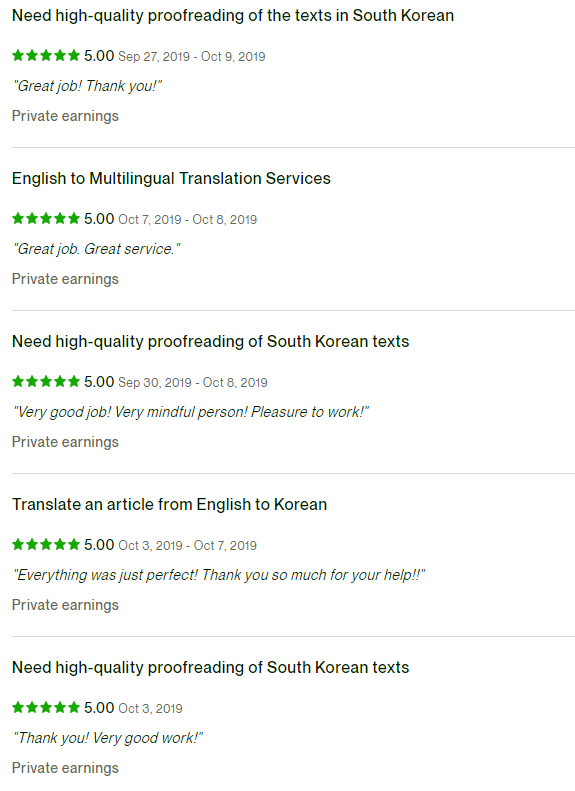

KR-EN freelance Translator

Description
After acquiring my Green Card (officially known as a Permanent Resident Card) in 2019, I had an opportunity to work as a contract-based freelance translator for college tuition for 3 years.
As I work as a freelancer, I've demonstrated:
1. Outstanding ability to cope with various clients; each client has unique needs, different expectations, and different personality. Everyone has been happy with my tailored service and I have maintained a perfect review score for 3 years.
2. Effective time management. Sometimes I had extremely tight turnovers, as low as 24 hours, on top of my full-time school work. I never missed a single deadline.
3. How to soak knowledge. Some of my work required knowledge of professional vocabulary and jargons. One time, I learned what diabetic peripheral neuropathy (DPN) is, and how clinical trials in the United States works overnight and transcribe/translate a 3-hour-long video of a medical presentation.
With my capabilities in mind, I tried to accept jobs that have reasonable turnovers and tasks. However, once I accepted a job, I made my best efforts to make it perfect.
Upon graduation, I've decided to move on to the next chapter of my life and pursue a career path of software engineering!
Review sample:
